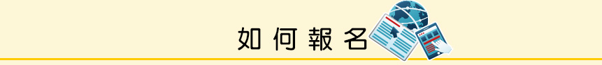

1.報名前需先準備以下物品
- 護照電子檔（須注意護照有效期限）
- 信用卡、銀聯卡(線上繳費)或現金(鄰近超商繳費)
2.可自行上網報名或至官方單位報名。
3.官方報名單位考場差別
| British Council | IDP | |
|---|---|---|
| 考場數量 | 42個 |
24個 |
| 考場差別 | 平均一周一場 | 平均一周一場 |
| 獎金申請 | 有 台灣區100,000元整，共三名 東亞區獎金最高金額2,000,000元，共三名 詳情：http://www.ieltsasia.org/ielts-prize/taiwan/ |
不定時 |
| 報名系統 | 中文 | 中文 |
| 監考人員 | 親和且具專業性 | 一般 |
| 成績公布 | 穩定 | 穩定 |
| 額外成績單申請 | 便利 | 便利 |
| 雅思課程 | 原廠有專業課程可供選擇 |
授權中心才有專業課程可供選擇 |
| 講座課程 | 不定時 | 不定時 |
| 門市資訊 |
|
|
| 網友討論度 | ★★★ | ★★ |
*資料統計至2016年8月